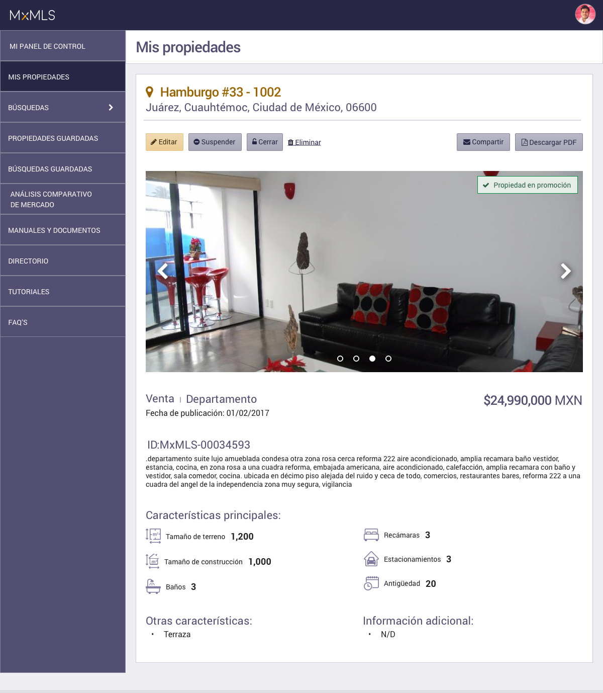
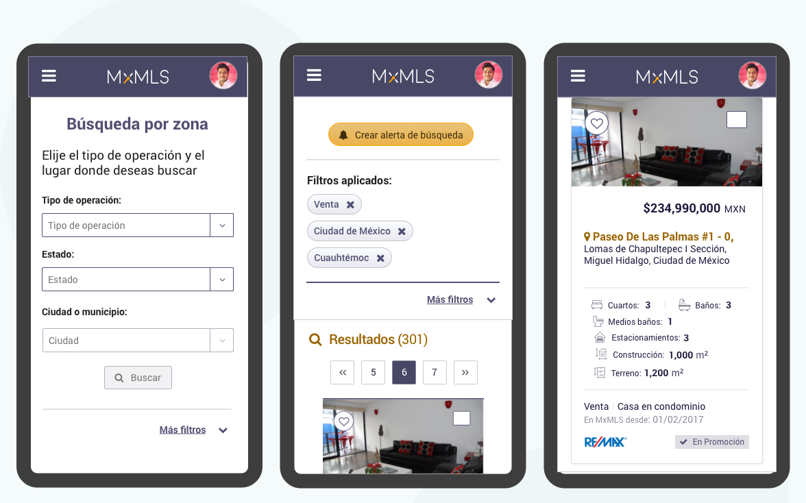
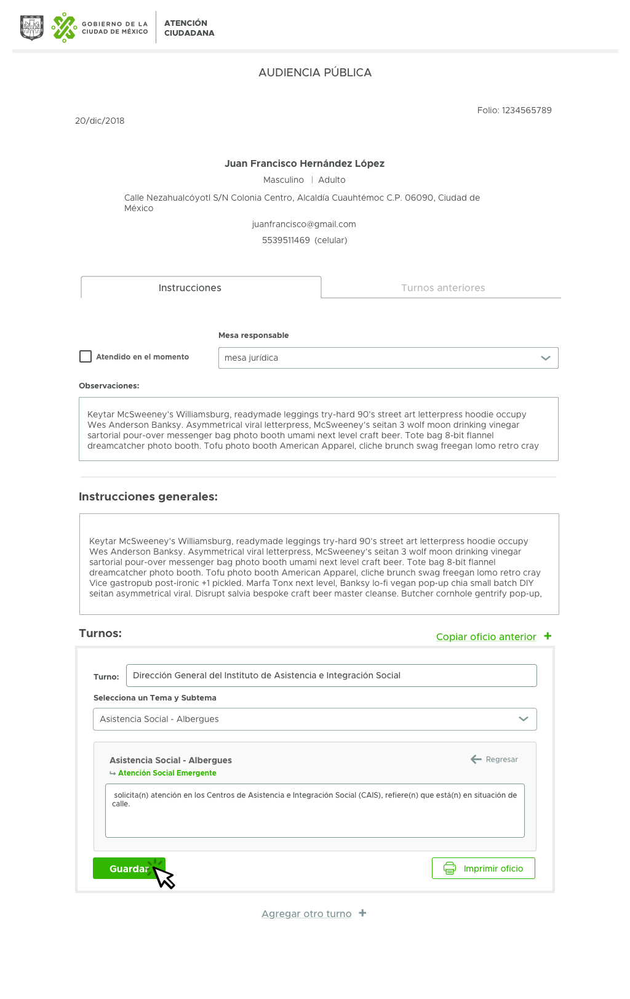
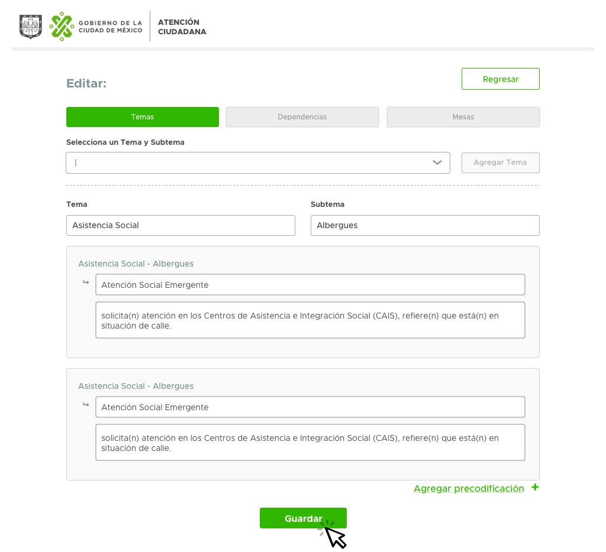
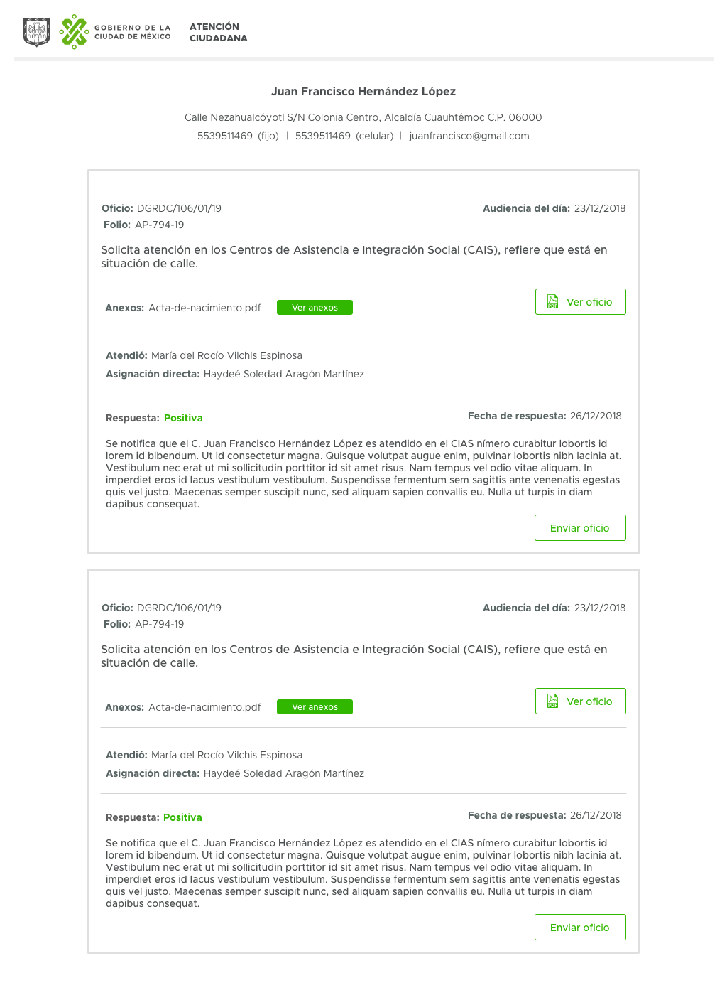
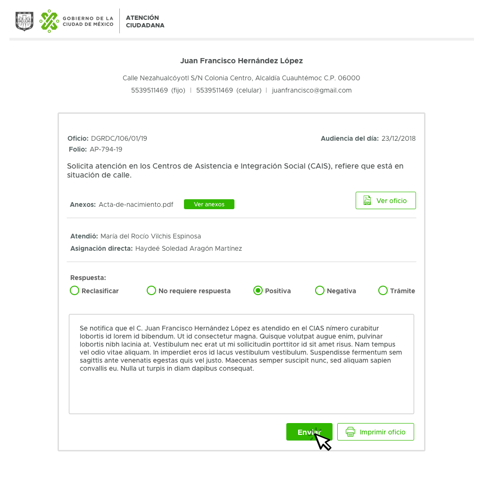
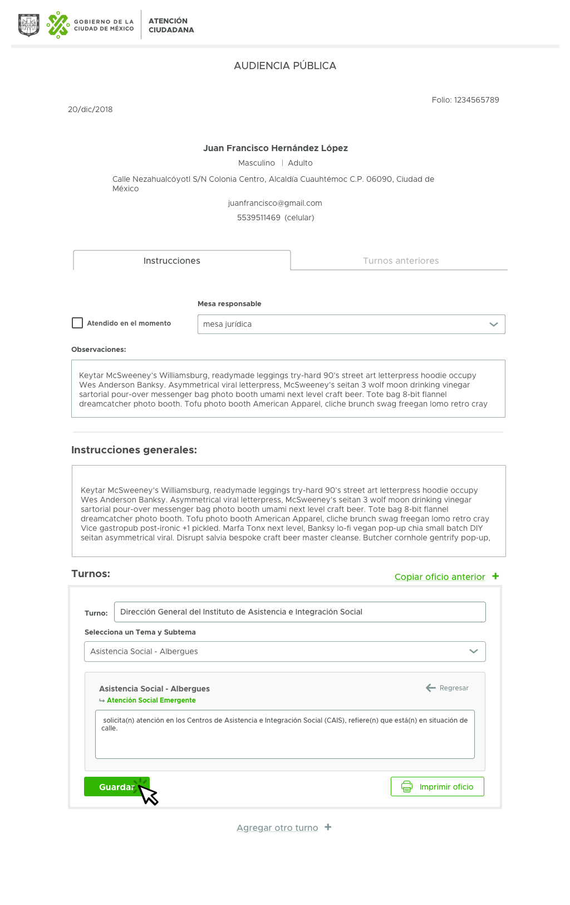
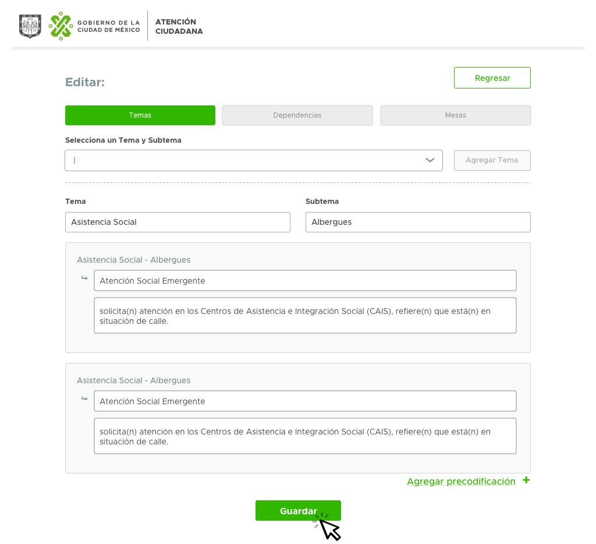
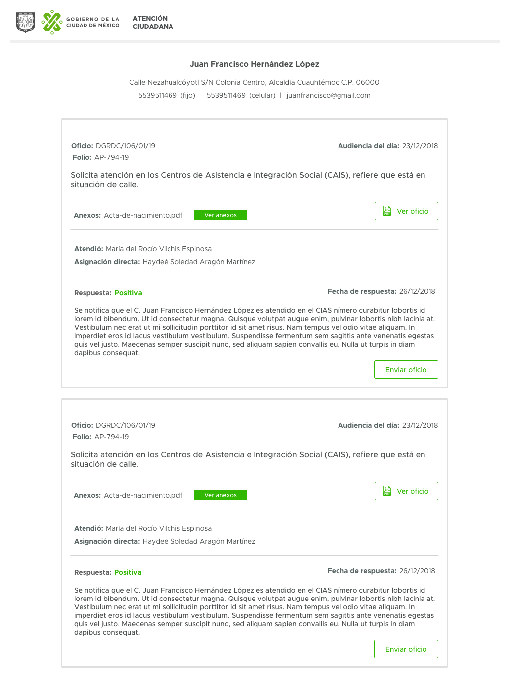
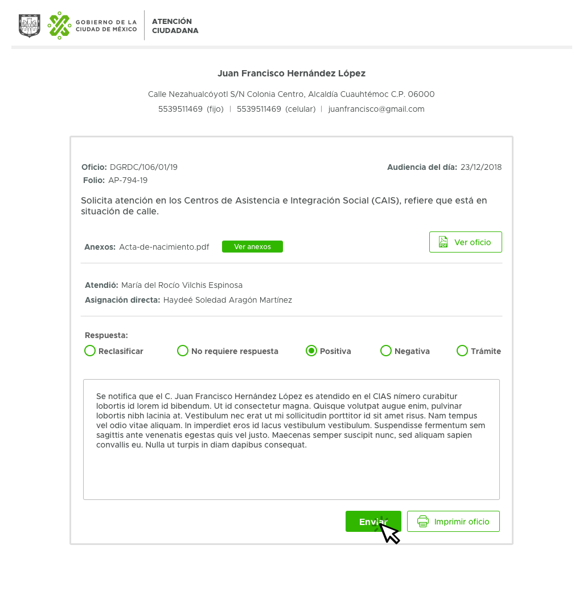

Funciones:
- Diseño de interfaz de usuario.
- Arquitectura de la información.
- Diseño de experiencia de usuario.
- Investigación de usuarios.
Sobre el proyecto:
La MxMLS es una plataforma basada en datos que reúne a las principales inmobiliarias del país. Ofrece herramientas para facilitar el trabajo de los agentes inmobiliarios como: búsquedas especializadas, análisis de mercado y directorio.
El problema:
La plataforma no era usada por los agentes registrados y tampoco generaba nuevos usuarios. Esto creó un círculo vicioso, ya que al no tener usuarios tampoco tenía inventario y por lo tanto, no era atractiva.
Barreras:
Rango de edad de los usuarios:
- Brecha digital
- Interfaz de usuario poco legible
- Necesidad de capacitación para el uso de la plataforma
Proceso:
A partir de entrevistas con usuarios, se identificaron tres user personas: los brókers (agentes inmobiliarios), los dueños de las inmobiliarias y los desarrolladores (inversionistas).
De estos, el grueso de usuarios son brókers, mujeres mayores, poco acostumbradas al uso de la tecnología aplicada a su trabajo.
En las entrevistas se identificaron problemas en el diseño de la interfaz como: falta de contraste y legibilidad. En un primer momento, se pensó que esto era la causa de la falta de usuarios.
1. Rediseño de la interfaz
Para el rediseño de la plataforma, se definió una paleta primaria con un contraste AAA para asegurar el contraste. Se cuidó el tamaño de las tipografías para fueran lo suficientemente cómodas para leer. También se hizo énfasis en la apariencia de los botones, con relieve, para facilitar a los usuarios saber cuáles elementos eran accionables.
A partir de esta primera aproximación se rediseñó toda la plataforma. Sin embargo, al no contar con un sistema de diseño los elementos no eran uniformes, por lo que se decidió construir un sistema de diseño basado en atomic design y se creó una librería de “símbolos” reutilizables que permiten crear prototipos de alta definición en poco tiempo, además de poder actualizar las diferentes pantallas de manera rápida.
Sin embargo, habían interacciones que los usuarios seguían sin entender.

2. Rediseño de flujos de usuario y arquitectura de la información
La disposición de los elementos en el sitio hacía difícil a los usuarios encontrar botones y seguir los flujos para completar las acciones como: realizar un análisis, una búsqueda o denunciar una propiedad fraudulenta.
Se realizaron pruebas con usuarios para detectar los puntos de estrés, donde los usuarios no entendían o no encontraban los elementos. A través de entrevistas a profundidad y pruebas de usabilidad se detectaron las áreas de mejora de la plataforma.
Por otro lado, en el menú principal existían secciones desactualizadas como videotutoriales con la interfaz anterior, o nomenclaturas que confundían al usuario. Se decidió trabajar sobre la arquitectura de la información del sitio.
Para esto se utilizó el método card sorting para agrupar elementos parecidos y eliminar los innecesarios del menú principal. Para comprobar la efectividad en los cambios se utilizaron las métricas de Google Analytics.
Cada semana se mantuvo una entrevista a profundidad con un bróker diferente en la que todos los miembros del equipo estaban presentes para poder identificar errores y áreas de mejora.

Resultado:
El número de usuarios que firmaron los términos y condiciones llegó casi al 90% del número total de agentes. Además, el número de usuarios activos en el sitio (que publicaban y consultaban propiedades) aumentó más del 200%.

 






